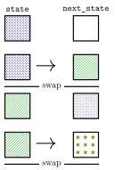
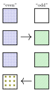

Changelog:
- 9 April 2026: correct
LB_printtoLB_displayto match the actual name in the supplied skeleton code - 10 April 2026: update module load instance to match current portal configuration
1 Your Task
1.1 Before you code
Examine the supplied skeleton
code [last updated 2025-04-06] which implements Conway’s
Game of Life. You should only edit life-parallel.c, but
that interacts with many other files in the package.
Make sure you look at input/README.md, as well as
life.h and any other files you wish.
The provided code will compile and run. On portal you may need to use
module load gcc clang or similar to make clang
available for its makefile. We encourage experimenting with it before
adding any code of your own.
Make sure you understand how simulate_life_serial works.
You’ll be making a (more complicated) parallel version of this, and are
unlikely to be successful if you don’t understand this starting
point.
1.2 Implement parallel Life
Create a parallel version (using pthreads) in
life-parallel.c. You must use the provided header
void simulate_life_parallel(int threads, LifeBoard *state, int steps)life-serial.c contains a correct, working
single-threaded implementation you are welcome to borrow from. You
should write helper functions as appropriate to keep your code
well-organized.
Additional constraints:
Your implementation must be correct (result in the expected final board configuration, matching the serial version) for all boards and iteration counts.
You must call
pthread_createexactlythreadstimes (assuming you are computing cell values only in new threads you create; if you also compute cell values in the main (initial) thread, call itthreads-1times instead). Do not create more or fewer threads, nor create new threads for each iteration of the simulation.We must be able to call
simulate_life_parallelfrom multiple threads concurrently. Do not use global variables or other thread-unsafe practices.You must have no memory leaks or other memory errors. The provided
Makefilebuilds a version with the address sanitizer enabled automatically aslife-asan; this must run without errors.ThreadSanitizer should not detect likely race conditions or other thread API errors in your code. The provided
Makefilebuilds a version with the thread sanitizer enabled automatically aslife-tsan.You must call the appropriate
pthread_***_destroyfor eachpthread_***_inityou call to reclaim any pthreads-allocated memory.- On some older Linux machines,
pthread_barrier_destroywon’t work properly unless called after allpthread_barrier_waitcalls have returned. (This is a bug in the pthread_barrier implementation on those machines.)
- On some older Linux machines,
On a multi-core machine, your parallel code must be noticeably faster than the serial code when run on sufficiently large boards for sufficiently many iterations.
On sufficiently large boards (both enough rows and enough columns), you should split up the work roughly evenly between the threads. (With large sizes, no thread should end up doing more than a few percent more computations than another.)
(With small numbers of rows or columns, it is okay if the work is not split up as evenly. For extremely small numbers of rows or columns, it is okay if some threads have no work to do.)
And, of course, you are still bound by all the usual course policies.
You must not use OpenMP (subject of one of our labs) in your solution: we are trying to measure your understanding of the lower-level tools OpenMP uses.
1.3 Test your code.
Uncomment the lines of main.c that are marked as
appropriate to uncomment after simulate_life_parallel is
written. Then test your code, as e.g. by running
./lifeto see the usage hints.life-asan 10 input/make-a timeto check for memory leaks and other memory errors (but do not trust its timing, the address sanitizer slows things down a lot).life-tsan 10 input/make-a timeto check for race conditions and some other types of synchornization errors (but do not trust its timing, the address sanitizer slows things down a lot).- if you get an error about a race condition with pthread_barrier_destroy and pthread_barrier_wait, see the first caveat below.
./life 0 input/o0075 serial-resultto ensure you can load an example file../life 110 input/o0075 serial-resultto ensure you can simulate an example file../life 10 input/make-a timeto time themake-afile with 10 steps../time-examples.shto get a sense of how you are doing on parallel performance../sanitizer-test.shto try a bunch of sizes in AddressSanitizer, ThreadSanitizer.
On portal, if you get stack traces with no line numbers from the life-asan, life-tsan, and/or sanitizer-test, try running
export ASAN_SYMBOLIZER_PATH=$(which llvm-symbolizer)and rerunning the command. (This should select a different program to convert addresses into line numbers for AddressSanitizer and ThreadSanitizer.)
2 Tips
2.1 General strategy
This assignment was designed to be a natural fit for barriers. You are strongly encourage to get a barrier-based solution working first before attempting any other approaches.
You should choose some way to split up the grid between threads. You will get best performance if each thread works on a part of the grid that is contiguous in memory, so you get better locality within a thread. This also will avoid performance problems associated with two processors trying to modify data in different parts of the same cache block.
To compute the value of a cell in generation i, one needs the value of its neighbors in generation i-1. Barriers are one way to make sure that the values from generation i-1 are available before any thread starts computing generation i.
You should be able to reuse almost all of the
simulate_life_serialcode. You will probably need to split it into at least two functions — one that represents the work done in separate threads and one that spawns the threads and waits for them to finish.If you find yourself tempted to use a global variable (such as a global mutex or barrier), you can usually get away with adding it as a field of a
structpassed in by reference to your thread function’svoid *parameter instead.
2.2 Understanding the swap and alternatives
The supplied code calls
LB_swap()to exchange boards. This means that the values instateare used to setnext_state, thennext_stateis swapped to becomestate. We can visualize this as follows:
If one uses that code as is, one must ensure that all threads stop accessing the boards before the swap happens and don’t start accessing the boards again until the swap finishes. Otherwise, threads could read values from the wrong version of the board and/or write values to the wrong version of the board.
An alternative, which calls wait on barriers fewer times each iteration, is to avoid swapping by having an
even
state andodd
state and choose which board to write to based on the generation number. (In even iterations, threads would use theodd
version of the state to write to theeven
state; and in odd iterations, threads would use theeven
version of the state to write to theodd
state.) This would result in a pattern that looks like this:
In this way, rather than waiting for the swap to finish before starting the next generation, threads just need to wait for all other threads to have finished the current generation. As long as threads have finished the current iteration, the values needed to compute the next iteration will be available and in a consistent location.
2.3 Debugging
If your code hangs:
you can run it in a debugger until it hangs, and then interrupt it (like with control-C) and examine where each thread is.
For doing this in LLDB, see their tutorial on examining thread state.
In GDB, you can use a command like
thread apply all backtraceto get a backtrace from all threads, andthread THREAD-IDto switch to debugging the thread with a particular ID; see also the manual for debugging with threads in GDB.several common mistakes with barriers that can cause hangs include:
giving each thread its own copy of a barrier rather than having them share a single barrier (usually accessed using pointers);
initializing a barrier with an incorrect thread count;
destroying barriers while they are still in use;
running into the issue with
pthread_barrier_destroymentioned in caveats;
If your parallel code’s result disagrees with the serial code:
I would recommend check to see if the sanitizer tests find problems first;
Besides issues found by the sanitizer tests, common problems include:
Not handling the same set of x, y values as the serial code.
Unintentionally not sharing boards between threads
You may find the very small input
input/tinyuseful for debugging; or you can modify it (in a text editor) into a slightly larger input;You can look at the actual board your parallel code computed using commands like
life-asan 10 input/tiny time-and-result.You can call
LB_displayto print out the contents of a LifeBoard for debugging.
2.4 ThreadSanitizer data
races
- When ThreadSanitizer detects a potential data race, that means that it identified a case where you’re writing to some memory from one thread while another thread might also be writing or reading at the same time. The ThreadSanitizer output should show where in your code the write and the read/write are happening and also idenitfy the memory location where this happened.
3 Caveats
MacOS and OS X ship with only a subset of the pthreads library, notably excluding
pthread_barrier_tand its associated functions. You should probably use portal, a virtual machine, etc.The version of
pthread_barrier_destroysupplied with GNU libc version 2.22 and older requires that you do not call pthread_barrier_destroy until you are sure that all threads have first returned fromptherad_barrier_wait. This is a bug in the those machine’s version of thelibc, see this mailing list post or this bug. This should not be a problem on portal/our testing machines, which have GNU libc version 2.35 (as of this writing).